How LLMs work
1. What's the difference between a token and a word?
Compare basic
TL;DR. A token is the model's atomic unit — usually a sub-word — so one word may be one or several tokens.
Key points.
- A token is the model's atomic input/output unit.
- One word can be several tokens; rare/long words and code fragment more.
- Tokenization explains character-level mistakes (miscounting letters).
Concept. A token is the model's atomic unit — typically a sub-word produced by a BPE/unigram vocabulary — so one word may be one or several tokens, and rare/long words and code fragment heavily. This is also why models miscount letters and struggle with character-level tasks.
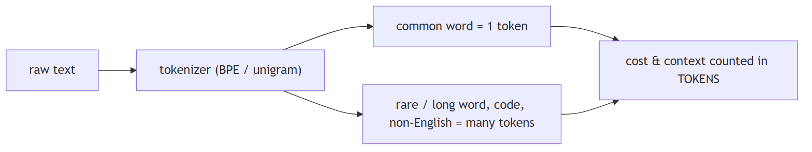
In Jiuwen. Jiuwen counts tokens, never words, via a pluggable TokenCounter: TiktokenCounter maps known model names to tiktoken encodings (with a cl100k_base fallback), and TiktokenModelCounter loads a model-native BPE vocabulary. TokenizerManager downloads the tokenizer artifacts per model/family.
Under the hood
Implementation
The framework counts tokens, never words, via a pluggable TokenCounter: TiktokenCounter maps known model names to tiktoken encodings (falling back to cl100k_base for unknown models), and TiktokenModelCounter loads a model-native BPE vocabulary. TokenizerArtifactManager (core/context_engine/token/tokenizer_manager.py:23) resolves and downloads HuggingFace/tiktoken artifacts per model/family.
Implementation diagram
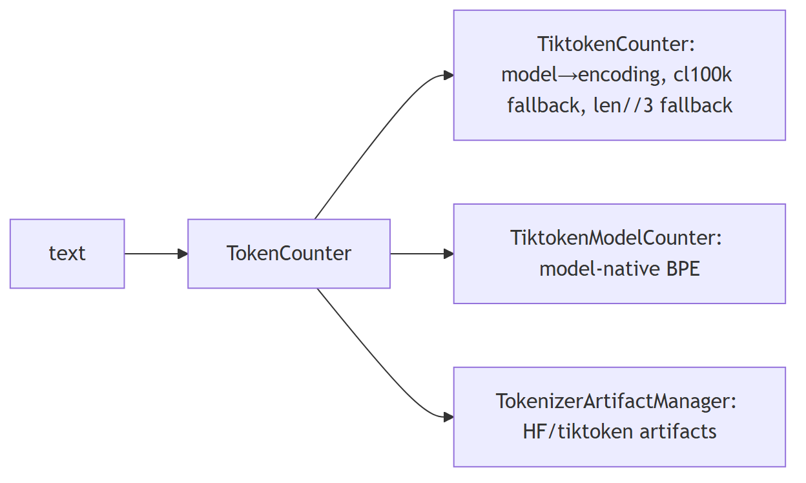
Code anchors
| Code anchor | What it points to |
|---|---|
agent-core/openjiuwen/core/context_engine/token/tiktoken_counter.py:212 |
TiktokenCounter; :225 model→encoding map; :287 count() with len(text)//3 fallback |
agent-core/openjiuwen/core/context_engine/token/tiktoken_model_counter.py:86 |
model-native tiktoken BPE |
agent-core/openjiuwen/core/context_engine/token/tokenizer_spec.py:34 |
TokenizerSpec; :50 fallback policy chain |
agent-core/openjiuwen/core/context_engine/token/tokenizer_manager.py:23 |
resolves/downloads tokenizer artifacts |
2. Why does tokenization affect cost and context limits
Mechanism intermediate
TL;DR. Cost and context are measured in tokens, not words — text that fragments more costs more and fills the window faster.
Key points.
- Cost and context are counted in tokens, not words.
- More fragmentation → more tokens → higher cost, faster window fill.
- Token counts also drive chunking and compaction thresholds.
Concept. Cost and context limits are measured in tokens, not words, so a language or domain that fragments more costs more per word and fills the window faster. The same token count drives when history must be compacted or tool output offloaded.
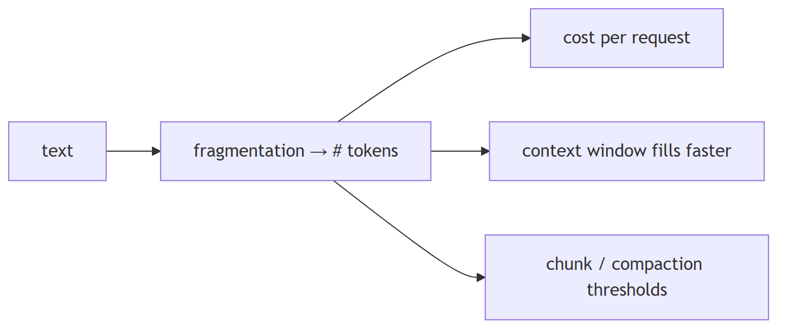
In Jiuwen. Token counts drive context limits (DEFAULT_CONTEXT_MAX_TOKENS = 200,000), compression/offload thresholds, and cost via provider-reported usage metadata (input/output/cache/reasoning tokens). Retrieval chunking is also token-based.
Under the hood
Implementation
Token counts drive per-model context limits (MODEL_DEFAULT_CONTEXT_WINDOW_TOKENS, default 200,000), compression/offload thresholds, and cost via provider-reported usage_metadata (input_tokens/output_tokens/cache/reasoning tokens). Retrieval chunking is also token-based.
Implementation diagram
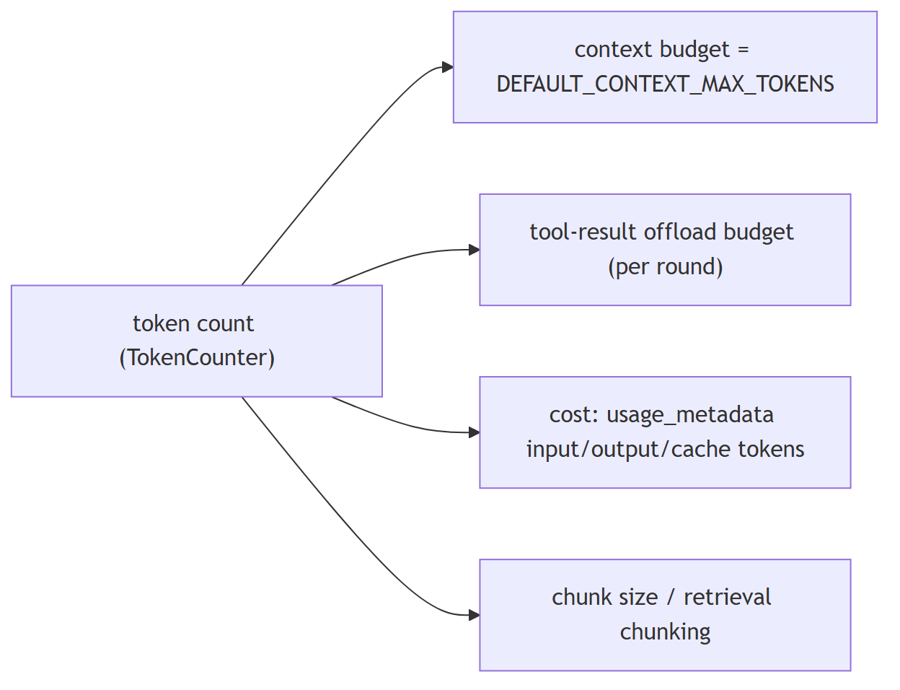
Code anchors
| Code anchor | What it points to |
|---|---|
agent-core/openjiuwen/core/context_engine/context/context_utils.py:20 |
DEFAULT_CONTEXT_MAX_TOKENS = 200000 |
agent-core/openjiuwen/core/context_engine/processor/offloader/tool_result_budget_processor.py:34 |
per-round token budget |
agent-core/openjiuwen/core/context_engine/token/tiktoken_counter.py:287 |
count() drives limits/cost |
agent-core/openjiuwen/core/foundation/llm/schema/message.py:28 |
total_tokens usage metadata |
3. What is the difference between tokens and embeddings?
Compare basic
TL;DR. Tokens are the discrete input/output units; embeddings are continuous vectors that encode meaning for similarity search.
Key points.
- Tokens: discrete sub-word units, bounded vocabulary, drive cost/limits.
- Embeddings: dense vectors in a semantic space, used for similarity.
- You embed chunks (token sequences), but they are different abstractions.
Concept. A token is a unit of text (a sub-word piece) — the input/output alphabet of the model. An embedding is a vector representation of text that encodes meaning, used for similarity search. Tokens are discrete and count against cost/context; embeddings are continuous and live in a vector space. You embed chunks/tokens, but they are different abstractions.
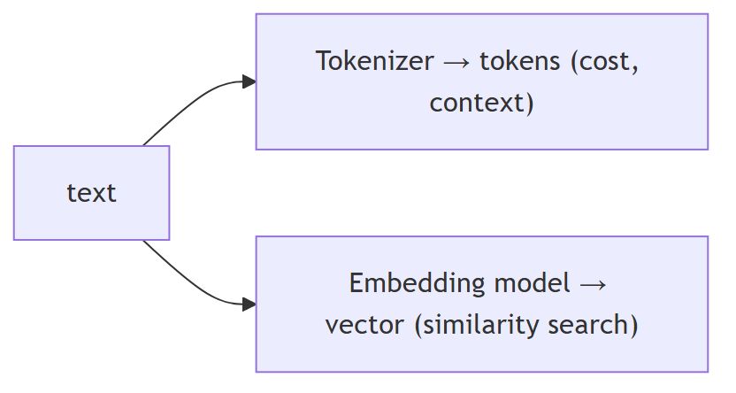
In Jiuwen. Tokens and embeddings are handled by two separate subsystems. A tokenizer counts tokens and drives context/cost limits; a separate embedding provider turns text into vectors that are stored and compared in a vector index. Which tokenizer you use sets chunk sizes, and which embedding model you use sets vector dimensions — the two are chosen independently.
Under the hood
Implementation
Tokens are counted by a pluggable TokenCounter (an ABC; the tiktoken-backed TiktokenCounter drives limits/cost); embeddings are produced by the Embedding ABC and compared in a vector store. The two are independent: the tokenizer sets chunk sizes, the embedder sets vector dimension.
Code anchors
| Code anchor | What it points to |
|---|---|
agent-core/openjiuwen/core/context_engine/token/tiktoken_counter.py:212 |
TiktokenCounter; :287 fallback |
agent-core/openjiuwen/core/foundation/store/base_embedding.py:24 |
Embedding ABC; :30 embed_query |
agent-core/openjiuwen/core/retrieval/indexing/indexer/embed_chunks.py:46 |
embed_documents |
4. Explain how self-attention works in a transformer
Mechanism intermediate
TL;DR. Each token builds a context-aware representation by attending to every other token, weighting them by query–key similarity.
Key points.
- Q/K/V projections; scores = Q·Kᵀ/√d_k; softmax → weights; weighted sum of V.
- Multiple heads capture different relationships in parallel.
- Permutation-equivariant: order comes from positional encoding, not attention.
- Stacked layers build increasingly abstract context.
Concept. Each token is projected into three vectors — query, key, value. The query of a token is dot-producted with the keys of all tokens (scaled by 1/√d_k), softmaxed into attention weights, and used to take a weighted sum of the values. Doing this with multiple heads in parallel and stacking layers lets each token aggregate information from every other token, with the weights computed from content rather than position. The result is a context-dependent representation per token.
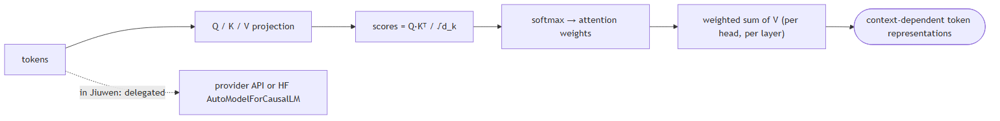
In Jiuwen. Attention is the model's job: Jiuwen delegates to hosted models or HuggingFace models loaded by name. Its boundary is the model-client/config layer — it builds request parameters and sends them to a provider, and for a local model it loads a causal LM and consumes the returned logits. Attention lives in the model, not in this codebase.
Under the hood
Implementation
Attention is the served model's job: provider APIs or HuggingFace models loaded by name. The framework's boundary is the model-client/config layer, which serializes request params, sends them to a provider, and (for the local transformers client) calls AutoModelForCausalLM and consumes the logits. The only torch.softmax in the framework is for token sampling, not attention.
Code anchors
| Code anchor | What it points to |
|---|---|
agent-core/openjiuwen/core/foundation/llm/schema/config.py:13 |
ProviderType enum: the model-client provider boundary, no architecture logic |
agent-core/openjiuwen/core/foundation/llm/model_clients/openai_model_client.py:1491 |
builds hosted request params, delegates computation |
agent-core/openjiuwen/symphony/retrieval/llm/transformers_logit_selection/client.py:227 |
torch.no_grad() forward; logit extraction only, no attention code |
agent-core/openjiuwen/symphony/retrieval/llm/transformers_prefix_cached_generation/client.py:175 |
AutoModelForCausalLM.from_pretrained(...); attention delegated |
agent-core/openjiuwen/symphony/retrieval/llm/transformers_prefix_cached_generation/generation.py:527 |
torch.softmax(...) is sampling, not attention |
5. What is positional encoding, and why do transformers need it if attention has no inherent sense of order
Mechanism basic
TL;DR. Attention is order-blind, so a position signal must be injected — added to embeddings (sinusoidal/learned) or applied as a rotation to Q/K (RoPE).
Key points.
- Without it, 'dog bites man' and 'man bites dog' are indistinguishable.
- Sinusoidal/learned: add a position vector to token embeddings.
- RoPE: rotate Q/K inside attention to encode relative position.
- Modern LLMs mostly use RoPE variants.
Concept. Self-attention is permutation-equivariant — without positional information it cannot distinguish token order, so "dog bites man" and "man bites dog" yield the same multiset of token representations, only reordered (not one identical output). Positional encoding injects order information — by adding a position-dependent signal to the token representations (sinusoidal/learned), or by rotating the query and key vectors inside attention (RoPE) — so the attention scores can depend on relative or absolute position. Without it the model cannot know sequence order.
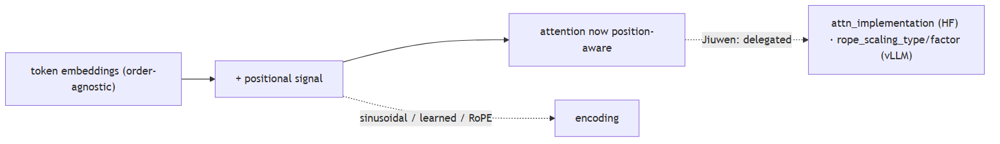
In Jiuwen. Positional encoding lives inside the model. Jiuwen only passes the relevant knobs through: an attention-implementation hint for HuggingFace and RoPE scaling options for the vLLM engine. Position ids in the RL data pipeline are batching/padding metadata.
Under the hood
Implementation
Positional encoding is the served model's job. The framework only passes related engine settings through: attn_implementation to HuggingFace, and rope_scaling_type/rope_scaling_factor as vLLM engine args. In the RL data pipeline, position_ids are computed for padded training batches — batching metadata, not an encoding scheme.
Code anchors
| Code anchor | What it points to |
|---|---|
agent-core/openjiuwen/symphony/retrieval/llm/config.py:88 |
attn_implementation: str = "" (HF passthrough) |
agent-core/openjiuwen/symphony/retrieval/llm/transformers_prefix_cached_generation/client.py:171 |
model_kwargs["attn_implementation"] |
agent-core/openjiuwen/symphony/retrieval/search/service/serving.py:42 |
rope_scaling_type / rope_scaling_factor vLLM defaults |
agent-core/openjiuwen/symphony/retrieval/llm/vllm/client.py:584 |
rope scaling passed through |
agent-core/openjiuwen/agent_evolving/agent_rl/offline/coordinator/batch_builder.py:175 |
position_ids from cumsum(attention_mask) (padding metadata) |
6. What's the difference between an encoder-only, decoder-only, and encoder-decoder model, and where does GPT fit
Compare basic
TL;DR. Encoder-only reads bidirectionally for understanding; decoder-only generates left-to-right; encoder-decoder maps one sequence to another. GPT is decoder-only.
Key points.
- Encoder-only (BERT): bidirectional; classification, embeddings, extraction.
- Decoder-only (GPT): autoregressive; generation.
- Encoder-decoder (T5): input→output tasks such as translation.
Concept. Encoder-only models (BERT) read bidirectional context and produce representations — good for classification, embedding, extraction. Decoder-only models (GPT) are autoregressive: they predict the next token attending only leftward, which makes them generators. Encoder-decoder models (T5, original Transformer) encode an input and generate an output, suited to translation/summarization. GPT is decoder-only.
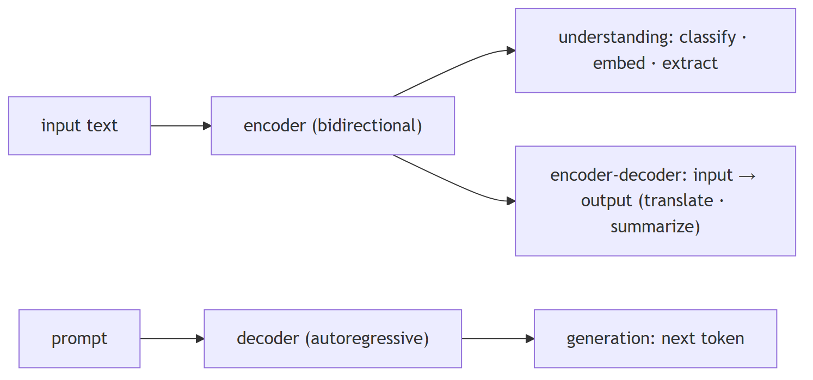
In Jiuwen. Jiuwen does not classify models as encoder or decoder. Behavior is chosen by provider and by the model-name string. The two HuggingFace loaders it uses reveal intent: causal generation loads a decoder language model, while guardrail classification loads a sequence-classification model (encoder-style). GPT is treated simply as a provider/model name.
Under the hood
Implementation
Architecture type is selected by model/provider choice rather than a config flag, no is_encoder_decoder/is_decoder flag, and no encoder/decoder classification. Behavior is selected by provider type and model-name string (model-family patterns also drive reasoning/thinking wire protocols and tokenizer selection). The two HuggingFace classes named in the repo imply the intent: causal generation uses AutoModelForCausalLM (decoder-only), and guardrail classification uses AutoModelForSequenceClassification (typically an encoder-style classifier). GPT is handled purely as a provider/model name.
Implementation diagram
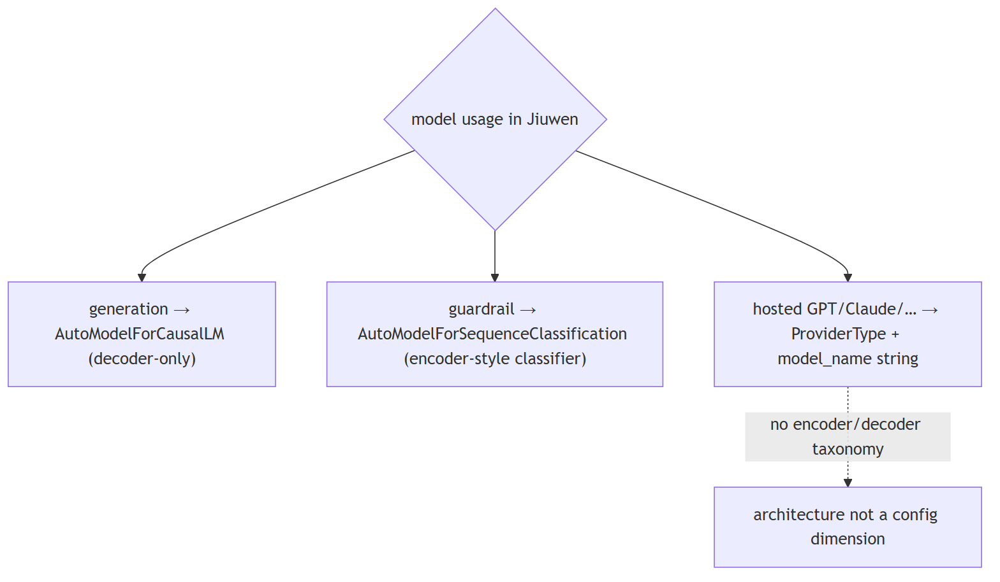
Code anchors
| Code anchor | What it points to |
|---|---|
agent-core/openjiuwen/core/foundation/llm/schema/config.py:13 |
ProviderType; architecture is not a config dimension |
agent-core/openjiuwen/core/foundation/llm/reasoning_profiles.py:100 |
model-family patterns used for reasoning-protocol selection (not architecture) |
agent-core/openjiuwen/core/security/guardrail/backends.py:445 |
AutoModelForSequenceClassification |
agent-core/openjiuwen/core/security/guardrail/builtin.py:174 |
model_type limited to None | "bert" | "qwen" |
agent-core/openjiuwen/symphony/retrieval/llm/transformers_prefix_cached_generation/client.py:175 |
AutoModelForCausalLM (decoder-only) |
agent-core/openjiuwen/symphony/retrieval/search/service/serving.py:35 |
vLLM architectures string |
7. What is the difference between a base model and an instruct model?
Compare basic
TL;DR. A base model predicts text; an instruct model has been through SFT + reward modeling + RLHF/DPO to follow instructions and decline harmful requests.
Key points.
- Base model: next-token prediction on massive corpus — no assistant persona, completes in any style seen during training
- Stage 1 SFT: fine-tune on helpful demonstrations — teaches format and tone
- Stage 2: reward model trained on human preference rankings
- Stage 3 RLHF or DPO: policy optimization toward reward model — produces instruction-following, safety-refusing behavior
- Jiuwen: no base/instruct distinction in config; SFT path in agent_rl/ is the stage that produces an instruct model from a base
Concept. A base model is pretrained on next-token prediction over a massive text corpus — it learns language, world knowledge, and code, but has no "assistant" persona. It will complete text in any style it has seen, including harmful ones. An instruct model (chat model) is a base model that has passed through one or more alignment stages: (1) SFT — supervised fine-tuning on demonstration data of helpful responses; (2) Reward modeling — a model trained to score responses by human preference rankings; (3) RLHF or DPO — policy optimization toward the reward model. The result is a model that follows instructions, declines harmful requests, and maintains a consistent persona. Base models (Llama-3-8B, Mistral-7B-base) are released for researchers to apply custom alignment; production systems virtually always use the instruct/chat variant.
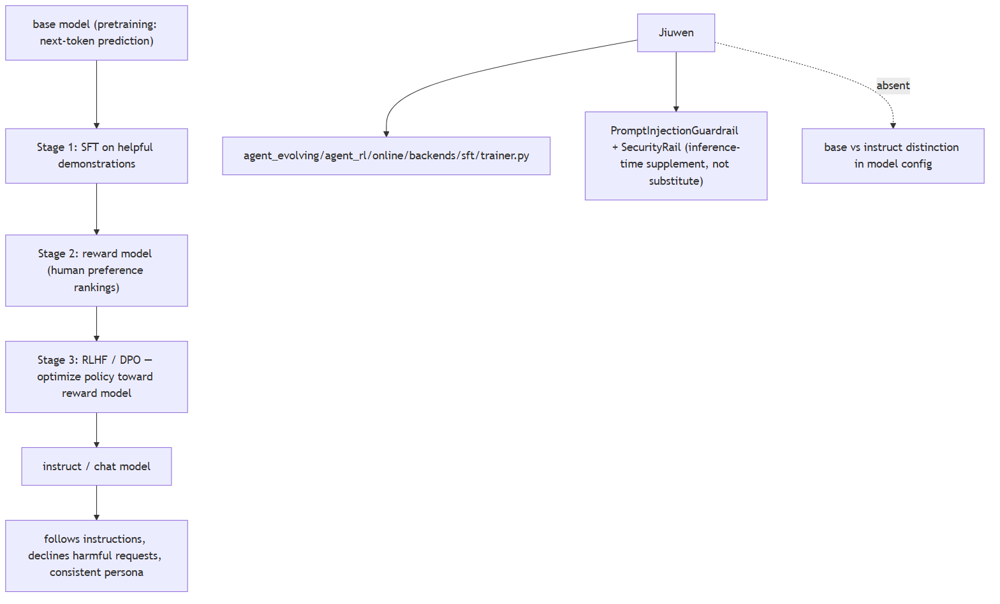
In Jiuwen. No base/instruct distinction in model config schema: ProviderType + model_name string selects a model (agent-core/openjiuwen/core/foundation/llm/schema/config.py:13). agent_evolving/agent_rl/online/backends/sft/trainer.py is the SFT stage that produces an instruct-model-like output from demonstration data — the framework implements the alignment training pipeline but does not tag served models as base vs instruct. PromptInjectionGuardrail (agent-core/openjiuwen/core/security/guardrail/builtin.py:60) provides an inference-time safety supplement but does not substitute for RLHF/DPO training.
Under the hood
Implementation
The framework consumes models by ProviderType + model_name string — there is no base/instruct distinction in the config schema. Jiuwen does not perform base→instruct alignment; that happens before serving. Its only training code is SFTTrainingExecutor (agent_evolving/agent_rl/online/backends/sft/trainer.py), an online-RL SFT executor rather than a full alignment pipeline. PromptInjectionGuardrail and SecurityRail apply safety classification at inference time as a supplement to alignment — they do not substitute for RLHF/DPO training.
Code anchors
| Code anchor | What it points to |
|---|---|
agent-core/openjiuwen/core/foundation/llm/schema/config.py:13 |
ProviderType (no instruct/base flag) |
agent-core/openjiuwen/agent_evolving/agent_rl/online/backends/sft/trainer.py:44 |
SFT stage (produces instruct-like model from base) |
agent-core/openjiuwen/core/security/guardrail/builtin.py:1 |
inference-time safety supplement |
8. What's the difference between a model's context window and its training data cutoff
Compare basic
TL;DR. The context window is a per-call capacity limit; the training cutoff is a knowledge-date limit. A big window does not make the model current.
Key points.
- Window = max tokens attended in one call (capacity).
- Cutoff = date after which the model has no knowledge (temporal).
- Fitting a document does not mean the model knows post-cutoff facts.
Concept. The context window is how many tokens the model can attend to at once (a capacity limit). The training data cutoff is the date after which the model has no knowledge (a temporal limit). A model can have a large window but an old cutoff — it can read a long document you paste but still not know events after its training date. Confusing the two leads to expecting up-to-date answers from a frozen model.
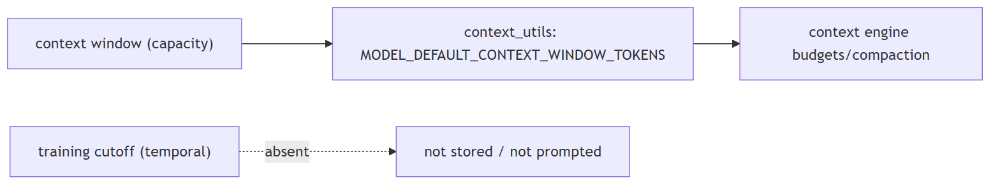
In Jiuwen. Jiuwen tracks operational metadata only: model name, provider, context-window size, output cap, and endpoint/auth. It resolves a window size per model but never stores or exposes a training cutoff or knowledge date, so it cannot distinguish 'the model does not know this' from 'it does not fit the window'.
Under the hood
Implementation
Model metadata here is operational only: model name, provider, context-window token counts, output max_tokens, auth/endpoint. The context engine resolves a window size per model but never stores, prompts, or exposes a training-data cutoff or knowledge date. Nothing distinguishes "the model does not know X" from "the window does not fit X".
Code anchors
| Code anchor | What it points to |
|---|---|
agent-core/openjiuwen/core/context_engine/context/context_utils.py:29 |
builtin window table; :275 fetch_openrouter_model_context_window_tokens() (window only) |
agent-core/openjiuwen/core/context_engine/schema/config.py:137 |
model_name; :139 model_context_window_tokens |
agent-core/openjiuwen/core/foundation/llm/schema/config.py:209 |
model_name; :214 max_tokens (output cap) |
agent-core/openjiuwen/core/foundation/llm/schema/generation_response.py:20 |
created timestamp (response, not cutoff) |
9. What happens when a conversation exceeds the model's context window
Mechanism intermediate
TL;DR. Either the provider rejects the request or you must shrink the prompt first — drop old turns, offload big tool outputs, or summarize.
Key points.
- Pre-empt: count tokens and budget before sending.
- Truncate oldest history but preserve recent turns.
- Offload large tool results and summarize old turns into memory.
- Otherwise the call is rejected or silently truncated.
Concept. Either the provider rejects the request, or the framework must shrink the prompt before sending. Robust systems pre-empt it: count tokens, then drop/truncate oldest history, offload large tool outputs, and/or summarize old turns into a compact memory block, always preserving recent turns. The goal is to keep the prompt within budget without losing the information needed for the next step.
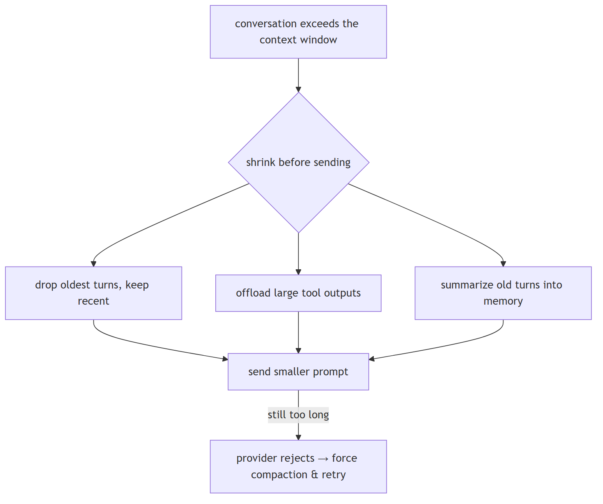
In Jiuwen. On each turn Jiuwen counts tokens with a model-aware tokenizer and trims proactively: large tool results are offloaded to disk and replaced with short previews, and older history is compressed once it crosses ratio or token thresholds. If the provider still rejects the request as too long, it detects the overflow, forces compaction, and retries only if the context actually changed; a hard message-count cap is the last resort.
Under the hood
Implementation
On every add_messages/get_context_window, the context engine counts tokens with a model-aware tokenizer and runs passive processors: offloaders persist oversized tool results to {workspace}/context/{session_id}_context/offload/ and replace them with <persisted-output> previews, while compressors trigger at ratio/token thresholds (RoundLevelCompressor at 0.9×budget, FullCompactProcessor at 180k) and rewrite history into summary/memory blocks. If the model still rejects the request, ContextEngine.recover_from_model_exception matches overflow phrases, force-runs compaction, and retries only if context actually changed. A hard max_context_message_num provides a last-resort FIFO drop. effective_context_budget is the strictest positive bound across configured window, per-call budget, and resolved model window.
Implementation diagram
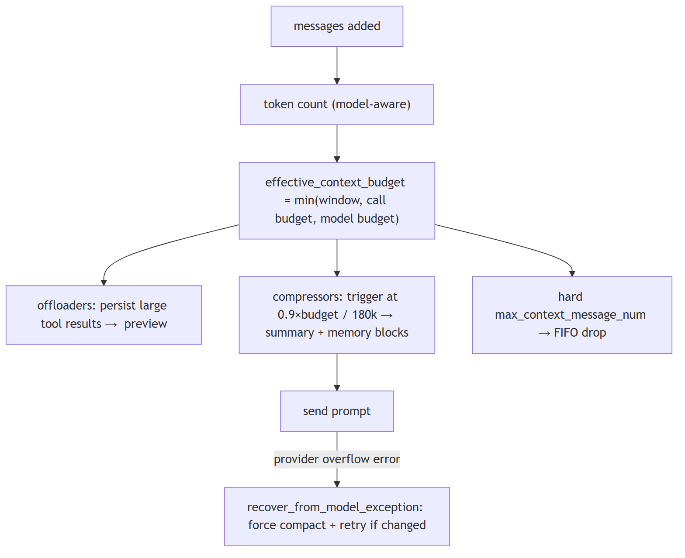
Code anchors
| Code anchor | What it points to |
|---|---|
agent-core/openjiuwen/core/context_engine/context/context_utils.py:20 |
DEFAULT_CONTEXT_MAX_TOKENS = 200000; :404 resolve_context_max(); :29 per-model window table |
agent-core/openjiuwen/core/context_engine/processor/budget_guard.py:37 |
effective_context_budget() = min of budgets |
agent-core/openjiuwen/core/context_engine/context/message_buffer.py:71 |
_if_need_resize() drops oldest beyond 2× |
agent-core/openjiuwen/core/context_engine/processor/compressor/round_level_compressor.py:104 |
trigger_context_ratio=0.9; :1159 _trigger_token_threshold() |
agent-core/openjiuwen/core/context_engine/processor/compressor/full_compact_processor.py:184 |
trigger_total_tokens=180000; :194 messages_to_keep=10 |
agent-core/openjiuwen/core/context_engine/context_engine.py:372 |
recover_from_model_exception() |
agent-core/openjiuwen/core/context_engine/processor/offloader/tool_result_budget_processor.py:34 |
per-round tokens_threshold=50000; agent-core/openjiuwen/core/context_engine/processor/offloader/message_offloader.py:45 tokens_threshold=20000 |
10. Why does model performance sometimes degrade with very long context, even when the context fits
Mechanism basic
TL;DR. Attention spreads thinner over more tokens and models use the middle poorly ('lost in the middle'), so a bigger context is not automatically better.
Key points.
- Signal dilution grows with context length.
- Primacy/recency bias: the start and end are used best.
- Distractor content can override instructions.
- Mitigate with retrieval, reranking, and ordering.
Concept. Attention spreads over more tokens, diluting the signal for any one of them, and models are empirically better at using information at the beginning and end of the context than in the middle ("lost in the middle"). Irrelevant long context also introduces distractors and can override instructions. Fitting the window is necessary but not sufficient; relevance and ordering matter too.
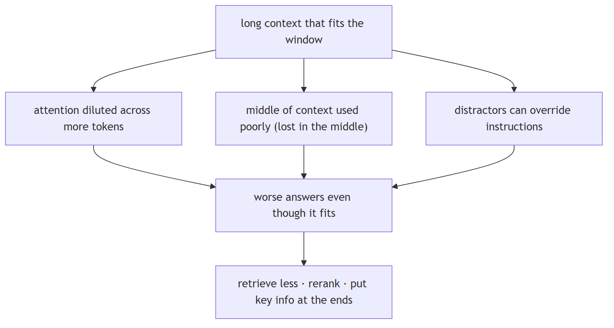
In Jiuwen. The context engine keeps prompts small and favors recent content, and it preserves the middle when trimming: compressors keep the newest messages, offloaders keep only the most recent tool results, and truncation preserves head + middle + tail rather than only the front. When enabled, an optional compression-recall mode archives replaced messages and re-surfaces the relevant ones using keyword search. There is no separate importance-reordering step.
Under the hood
Implementation
The system keeps the window small and biases toward recency, and it preserves the middle when trimming: Compressors protect a newest-message tail (keep_recent_messages, messages_to_keep, keep_last_round), offloaders keep only the newest K results, and truncation helpers preserve head + tail (one also keeps a middle slice) rather than only a prefix. When enabled, CompressionRecallConfig archives replaced messages in overlapping token chunks and a two-stage BM25 retriever can re-surface relevant archived chunks by query — the closest thing to relevance-based long-context handling.
Implementation diagram
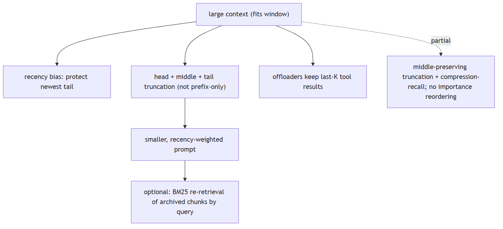
Code anchors
| Code anchor | What it points to |
|---|---|
agent-core/openjiuwen/core/context_engine/processor/compressor/round_level_compressor.py:119 |
keep_recent_messages; :1088 _build_head_tail_truncated_text(); :112 target_total_tokens=160000 |
agent-core/openjiuwen/core/context_engine/processor/compressor/full_compact_processor.py:194 |
messages_to_keep=10 |
agent-core/openjiuwen/core/context_engine/processor/offloader/message_offloader.py:63 |
keep_last_round=True |
agent-core/openjiuwen/core/context_engine/processor/offloader/message_summary_offloader.py:697 |
_smart_truncate_content() head/middle/tail |
agent-core/openjiuwen/core/context_engine/processor/budget_guard.py:114 |
_build_head_tail() |
agent-core/openjiuwen/core/context_engine/processor/forked/compressor/recall/archive.py:48 |
archive in 3000-token chunks / 300 overlap; agent-core/openjiuwen/core/context_engine/processor/forked/compressor/recall/retriever.py:27 BM25 recall_compressed_context() |
11. "How does the model know X" is really testing context window understanding
Claim intermediate
Claim, not a question. The heading is an assertion about what these questions probe; the notes below assess whether it holds.
TL;DR. 'How does the model know X' is really testing context-window understanding.
Key points.
- Strictest-bound budget.
- Offload large tool results.
- Multi-stage compaction.
- FIFO drop beyond message cap.
Concept. This claim is largely true: the useful thing to assess is what is actually inside the context window at generation time, not the model's stored knowledge; the one qualification is that the same question can also probe retrieval when the context is fetched. why the model forgot something earlier, why it mixed up two similar entities, why longer context degrades output — all trace back to what is actually inside the context window at generation time and how attention weights it. Reason about context contents, not model capability: name what is in the window (system prompt, retained turns, retrieved chunks, tool results) and what got dropped/compacted/offloaded; explain positional/attention dilution (lost in the middle); and for entity mix-ups, point at missing entity disambiguation or too-similar surface forms.
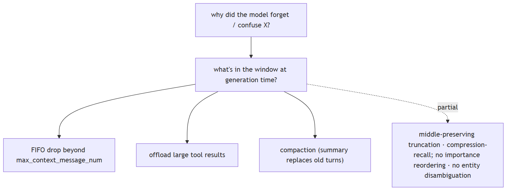
In Jiuwen. The context engine decides what is in the window and how it is trimmed: a strictest-bound budget, offload of large tool results, multi-stage compaction, and a FIFO drop beyond the max context message count, all biased toward the newest turns.
Under the hood
Implementation
The context engine decides what is in the window and how it is trimmed: a strictest-bound budget, offload of large tool results, multi-stage compaction, and a FIFO drop beyond max_context_message_num, all biased toward the newest turns. Truncation keeps head + middle + tail rather than only a prefix, and compression-recall can re-surface archived chunks; there is no separate importance-reordering step, and entity disambiguation/aliasing is not implemented.
Code anchors
| Code anchor | What it points to |
|---|---|
agent-core/openjiuwen/core/context_engine/context/context_utils.py:20/404 |
window resolution |
agent-core/openjiuwen/core/context_engine/processor/budget_guard.py:37 |
effective_context_budget (strictest) |
agent-core/openjiuwen/core/context_engine/context/message_buffer.py:71 |
FIFO drop |
agent-core/openjiuwen/core/context_engine/processor/offloader/tool_result_budget_processor.py:34 |
offload threshold |
agent-core/openjiuwen/core/context_engine/processor/compressor/full_compact_processor.py:184 |
compaction |
12. What does temperature actually control, mathematically, in the output distribution
Mechanism basic
TL;DR. Temperature rescales logits before softmax: near 0 is greedy and deterministic; higher flattens the distribution for diversity. It never changes which tokens are possible.
Key points.
- softmax(z/T); T = 1 leaves the model's raw distribution unchanged.
- T → 0 collapses toward argmax; T > 1 flattens.
- Only relative probabilities change; the token set stays the same.
- Use T = 0 for extraction/classification, higher for creative work.
Concept. The model produces logits z_i for the next token. Temperature T rescales them: softmax(z_i / T). As T → 0 the distribution collapses toward the argmax (greedy/deterministic); as T rises the distribution flattens, increasing diversity and the chance of lower-probability tokens. T = 1 leaves the model's raw distribution unchanged. It does not change which tokens are possible, only their relative probabilities.
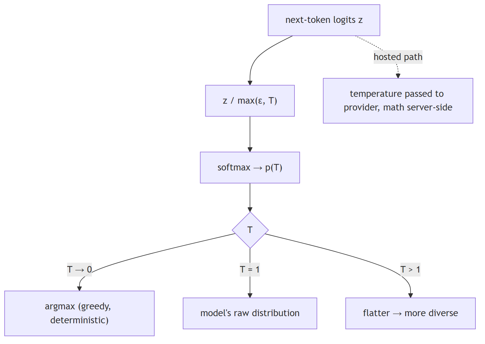
In Jiuwen. Temperature is mostly passed through to the provider, which does the math, and is also implemented for local models. At the client layer it defaults to unset and is added only when you specify it, and your request-level value overrides the config. Hosted quirks are handled: some OpenAI-style endpoints keep only one of temperature/top-p, and Anthropic routes sampling differently. Locally it divides logits by temperature and falls back to greedy at zero, with a default of 0.
Under the hood
Implementation
Temperature is a passthrough request parameter — hosted APIs apply the math — with a local implementation on the HF/vLLM path. At the core client layer temperature/top_p default to None and are added only when set; request-level args override ModelRequestConfig. OpenAI-compatible calls targeting openai.com keep only one of temperature/top_p (temperature wins, top_p dropped); Anthropic routes sampling through extra_body and drops top_p when temperature is explicitly set. The local sampler divides logits by temperature and softmaxes, with T <= 0 falling back to argmax. The local GenerationConfig default is temperature=0.0.
Code anchors
| Code anchor | What it points to |
|---|---|
agent-core/openjiuwen/core/foundation/llm/schema/config.py:210 |
temperature: Optional[float] = None |
agent-core/openjiuwen/core/foundation/llm/model_clients/base_model_client.py:556 |
final_temperature = ...; added only when not None |
agent-core/openjiuwen/core/foundation/llm/model_clients/openai_model_client.py:944 |
drops top_p when temperature present (openai.com) |
agent-core/openjiuwen/core/foundation/llm/model_clients/anthropic_model_client.py:929 |
temperature via extra_body; drops top_p if both set |
agent-core/openjiuwen/symphony/retrieval/llm/transformers_prefix_cached_generation/generation.py:516 |
scores = next_token_logits / max(1e-6, temperature) |
agent-core/openjiuwen/symphony/retrieval/llm/base/types.py:60 |
GenerationConfig.temperature: float = 0.0 |
13. What's the difference between top-k sampling and top-p (nucleus) sampling
Compare basic
TL;DR. Both truncate the distribution before sampling: top-k keeps a fixed k tokens; top-p keeps the smallest set reaching cumulative probability p (adaptive).
Key points.
- Top-k: fixed candidate count regardless of confidence.
- Top-p: adaptive — few tokens when peaked, many when flat.
- Often combined; top-p usually adapts better.
Concept. Both truncate the next-token distribution before sampling. Top-k keeps the k most probable tokens and renormalizes — a fixed candidate count regardless of how peaked the distribution is. Top-p keeps the smallest set of tokens whose cumulative probability reaches p — an adaptive count: few tokens when the model is confident, many when it is flat. Top-p usually adapts better; they are often combined.
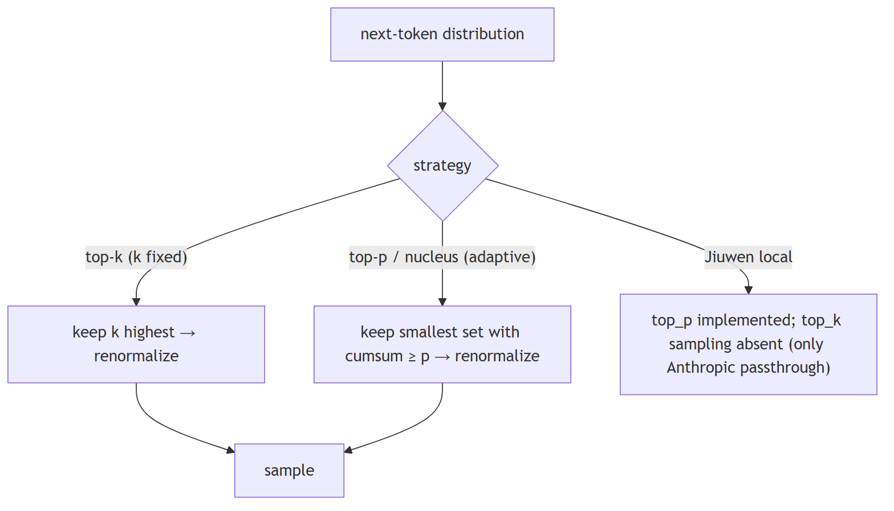
In Jiuwen. Jiuwen samples locally with top-p (nucleus): it keeps the smallest token set reaching the target cumulative probability, renormalizes, and samples. There is no top-k field for generation; hosted models receive top-p (Anthropic also accepts top-k if passed). Elsewhere the codebase reuses 'top-k' for retrieval counts, unrelated to sampling.
Under the hood
Implementation
Local generation samples with top-p (nucleus): GenerationConfig exposes top_p (default 1.0), and top-k is not a local sampling field. The local sampler sorts scores, masks tokens beyond the cumulative top_p, re-softmaxes, and multinomial-samples; top_p == 1.0 samples the full distribution. Hosted providers receive top_p in the normal body; Anthropic additionally forwards top_k via extra_body if present. Note three unrelated top_k meanings in the codebase that are not LLM sampling: retrieval result count, trie-constraint allowed outputs, and logit-selection candidate scoring.
Code anchors
| Code anchor | What it points to |
|---|---|
agent-core/openjiuwen/symphony/retrieval/llm/base/types.py:61 |
GenerationConfig.top_p: float = 1.0; no top_k sampling field |
agent-core/openjiuwen/symphony/retrieval/llm/transformers_prefix_cached_generation/generation.py:517 |
nucleus top_p truncation; :534 full-distribution softmax when top_p ∉ (0,1) |
agent-core/openjiuwen/core/foundation/llm/model_clients/base_model_client.py:561 |
top_p resolved/passed |
agent-core/openjiuwen/core/foundation/llm/model_clients/anthropic_model_client.py:936 |
top_p via extra_body; :940 top_k forwarded if present |
agent-core/openjiuwen/core/foundation/llm/schema/config.py:213 |
top_p: Optional[float] = None (no top_k) |
agent-core/openjiuwen/symphony/retrieval/llm/base/types.py:40 |
TrieConstraint.top_k (allowed outputs, not sampling) |
14. Why does greedy decoding sometimes produce worse output than sampling-based decoding
Mechanism basic
TL;DR. Greedy is locally optimal but can lock into repetitive or bland text; sampling explores alternatives for more natural output. Use greedy when there's one right answer.
Key points.
- Greedy = argmax each step; it cannot recover from one bad choice.
- Sampling adds diversity and naturalness.
- Extraction/classification → greedy; open-ended → sampling.
Concept. Greedy picks the single highest-probability token each step. That is locally optimal but not globally: it can lock into repetitive, degenerate, or bland sequences, and it cannot recover from one early bad choice. Sampling explores alternatives, which often yields more natural and diverse text; a moderate temperature with top-p is a common default. For tasks with a single correct answer (extraction, classification), greedy/T=0 is usually preferred.
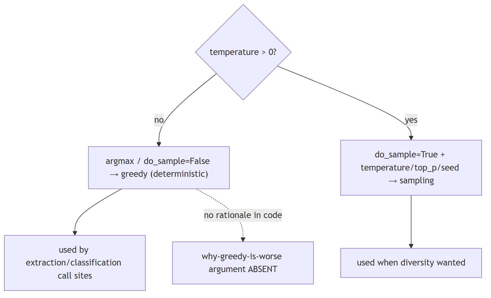
In Jiuwen. Greedy decoding is what you get at temperature zero: the local sampler returns the single highest-probability token and disables sampling. Because the local default temperature is 0, greedy is the default. Many internal call sites deliberately use temperature 0 for deterministic extraction/classification and switch to sampling when temperature is above zero. Tellingly, the code treats this purely as a determinism switch — there is no reasoning anywhere about why greedy can produce worse text.
Under the hood
Implementation
Greedy is implemented but not argued. The local sampler returns argmax when temperature <= 0.0, and the generate path sets do_sample=False in that branch; since GenerationConfig defaults to temperature=0.0, the local default is greedy. Many framework call sites deliberately pass temperature=0.0 for deterministic extraction/classification, while sampling is enabled (do_sample=True, temperature/top_p/seed) when temperature > 0. There is no comment, doc, or code discussion explaining why greedy can be worse than sampling — the choice is treated purely as a determinism knob.
Code anchors
| Code anchor | What it points to |
|---|---|
agent-core/openjiuwen/symphony/retrieval/llm/transformers_prefix_cached_generation/generation.py:514 |
if temperature <= 0.0: return int(torch.argmax(...)) |
agent-core/openjiuwen/symphony/retrieval/llm/transformers_prefix_cached_generation/generation.py:335 |
do_sample=True when temperature > 0; :344 do_sample=False |
agent-core/openjiuwen/symphony/retrieval/llm/base/types.py:60 |
default temperature = 0.0 ⇒ local default greedy |
agent-core/openjiuwen/agent_evolving/agent_rl/rl_trainer/verl_executor.py:185 |
remax_input.meta_info["do_sample"] = False (REMAX baseline, not an exploit path) |
agent-core/openjiuwen/core/retrieval/indexing/processor/extractor/triple_extractor.py:31 |
constructor default temperature=0.0 |
15. Why do LLMs struggle with tasks like counting or basic arithmetic
Mechanism intermediate
TL;DR. Models see tokens, not characters or digits, and never learn a carry algorithm — so exact math is unreliable and should be delegated to a tool.
Key points.
- BPE hides characters, so letter counting fails.
- Multi-digit arithmetic requires carrying, which is not learned reliably.
- Fix it with tool use (calculator/code), not a bigger prompt.
Concept. The model operates on tokens, not characters or digits-as-numbers; counting letters requires character-level reasoning that BPE hides, and multi-digit arithmetic requires carrying/positional algorithms that are error-prone to learn implicitly. Models also have no scratchpad guarantee unless asked to show work. The reliable fix is tool use — call a calculator or run code — rather than expecting the forward pass to do exact math.
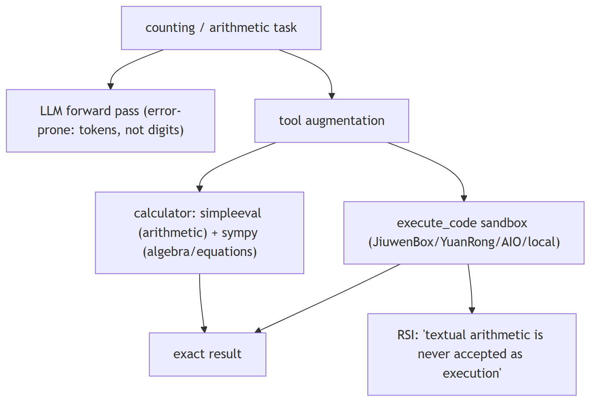
In Jiuwen. Jiuwen treats math as a tool problem. A canonical example teaches an agent to call a calculator tool (arithmetic via a safe evaluator, algebra via a symbolic library), and the prompt walks it through the steps. More generally, agents can run code in a sandbox to do math and logic. The repo's evaluation code even encodes the rule that 'textual arithmetic is never accepted as execution' — results must come from real execution.
Under the hood
Implementation
The repo frames arithmetic/counting as a tool-augmentation problem. A canonical example trains a DeepAgent to call a calculator tool that evaluates arithmetic via simpleeval and solves/simplifies algebra/equations via sympy; the system prompt explicitly instructs tool use step by step. More generally, an execute_code sandbox operation (JiuwenBox/YuanRong/AIO providers plus a local provider) lets agents run code for math/logic. The RSI evidence analyzer encodes the principle "textual arithmetic is never accepted as execution" — verification must come from actual code execution.
Code anchors
| Code anchor | What it points to |
|---|---|
agent-core/examples/rl_calculator/tools.py:11-14 |
@tool(name="calculator"); :15-85 simple_eval + sympy |
agent-core/examples/rl_calculator/prompts.py:7-16 |
"Use the calculator tool … step by step" |
agent-core/openjiuwen/core/sys_operation/code.py:16-49 |
execute_code sys-operation |
agent-core/openjiuwen/extensions/sys_operation/sandbox/providers/jiuwenbox.py:2927 |
sandbox execute_code |
agent-core/openjiuwen/rsi/harness_rsi/evaluation_result_analyzer/evidence_investigation.py:200 |
"textual arithmetic is never accepted as execution" |
16. What is hallucination, and why does it happen even in a well-trained model
Mechanism basic
TL;DR. Hallucination is fluent but unsupported output, caused by optimizing next-token likelihood rather than truth. Mitigate with grounding, verification, and abstention.
Key points.
- Objective is plausibility, not factuality; there is no built-in fact store.
- Generalized patterns fabricate specifics confidently.
- Mitigations: retrieval/citations, verification, constrained formats, abstention.
- It is a property of the objective, not a bug you patch in the weights.
Concept. Hallucination is fluent output that is not grounded in fact or in the provided context. It arises because the objective is next-token likelihood, not truth: the model optimizes plausibility, has no built-in fact database, generalizes patterns that sometimes fabricate specifics, and cannot reliably know the boundary of its own knowledge. Mitigations are grounding (retrieval/citations), verification, constrained formats, and abstention — not a property of the weights you can simply "fix".
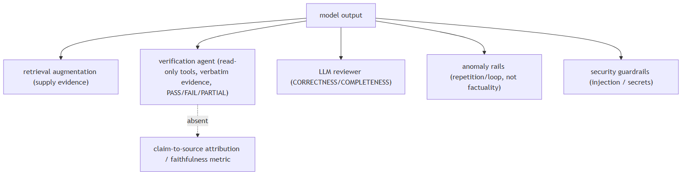
In Jiuwen. Hallucination is addressed by mitigations rather than in-model detection: retrieval infrastructure to supply evidence; a verification agent limited to read-only/command tools that must show real command output and give a PASS/FAIL/PARTIAL verdict; an LLM reviewer scoring correctness and completeness; anomaly detection for degenerate repetition/loops (not false claims); and security guardrails. Claim-to-source attribution is not part of this stack.
Under the hood
Implementation
The repo does not model or detect low-level hallucination; it implements downstream mitigations: (1) retrieval-augmentation infrastructure to supply evidence; (2) a dedicated verification agent restricted to read-only/command tools that must show verbatim command output with a PASS/FAIL/PARTIAL verdict; (3) an LLM quality reviewer scoring CORRECTNESS/COMPLETENESS; (4) model-anomaly rails that catch degenerate repetition/loops (not false claims); and (5) security guardrails/sanitization for injection and secret leakage. There is no claim-to-source attribution checker.
Code anchors
| Code anchor | What it points to |
|---|---|
agent-core/openjiuwen/harness/rails/model_anomaly_detection_rail.py:110-117 |
repeated stream output / timeouts / tool-call loops (degeneracy, not factual errors) |
agent-core/openjiuwen/harness/rails/subagent/verification_rail.py:92-108 |
VerificationRail tool allowlist; :165-196 blocks disallowed tools, requires evidence |
agent-core/openjiuwen/agent_teams/verification/reviewer.py:127 |
VerificationReviewer (LLM reviewer, correctness/completeness) |
agent-core/openjiuwen/core/security/guardrail/backends.py:39-80 |
guardrail detection backends; agent-core/openjiuwen/core/security/guardrail/context.py:115-202 confidence thresholds → risk levels |
agent-core/openjiuwen/harness/tools/web/paid_search.py:221-222 |
extracts citation URLs (no claim linkage) |
agent-core/openjiuwen/agent_evolving/tools/skill.py:284 |
"then cite only the refs you actually read" |
17. What's the difference between the model being "wrong" and the model being "uncertain," and can you tell the difference from the output alone
Compare basic
TL;DR. They are independent axes: a model can be confidently wrong or rightly unsure, and surface text does not reveal calibration.
Key points.
- Wrong = factually incorrect; uncertain = low confidence in the distribution.
- Fluent text carries no calibrated confidence.
- Approximations — logprobs, entropy, self-consistency — are all imperfect.
- Abstention only helps if it correlates with being wrong.
Concept. Wrong means the answer is factually incorrect; uncertain means the model's distribution is not confident, which may still yield a correct or incorrect answer. They are independent: a model can be confidently wrong, or rightly unsure. From the surface text alone you generally cannot tell — fluent text carries no calibrated confidence. Token log-probabilities, entropy, or self-consistency/vote checking can approximate uncertainty, but they are imperfect and need calibration; abstention only helps if it correlates with being wrong.
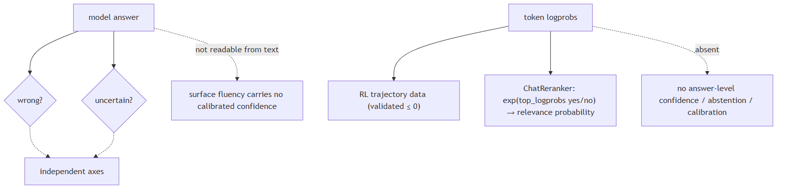
In Jiuwen. Jiuwen captures token log-probabilities for RL training and uses them in one place — a reranker that reads the 'yes'/'no' logprobs for a binary relevance call. They are not turned into an uncertainty or 'I do not know' signal for normal answers; retrieval has its own abstain token (about returning a document, not answer uncertainty), and there is no calibrated confidence threshold at which the agent abstains.
Under the hood
Implementation
The repo collects token logprobs but does not expose an uncertainty/abstention signal on ordinary agent answers. ReactAgent can request logprobs/top_logprobs, captured into canonical RL trajectory spans and validated (must be ≤ 0) for RL training. ChatReranker uses them for one specific binary decision: it exponentiates the top-logprobs of "yes"/"no" and normalizes to a relevance probability. The retrieval subsystem has an explicit abstain token ("0"), but that is retrieval-selection abstention, not output uncertainty. There is no confidence threshold at which an agent says "I don't know," and no calibration.
Code anchors
| Code anchor | What it points to |
|---|---|
agent-core/openjiuwen/core/retrieval/reranker/chat_reranker.py:83-107 |
exp(logprob) yes/no → normalized confidence; :134-141 logprobs=True, top_logprobs=5, yes/no logit bias |
agent-core/openjiuwen/core/single_agent/agents/react_agent.py:294-303 |
llm_logprobs/llm_top_logprobs; :1622-1624 passes to model call |
agent-core/openjiuwen/agent_evolving/agent_rl/online/capture_pipeline.py:404-427 |
parses per-token logprobs, rejects > 0 |
agent-core/openjiuwen/agent_evolving/trajectory/schema.py:36-47 |
RL_LOGPROBS; agent-core/openjiuwen/agent_evolving/trajectory/spans.py:849-873 — read_rl_fields |
agent-core/openjiuwen/symphony/retrieval/search/runtime/selector.py:305-315 |
is_abstain from output token "0" (retrieval only) |